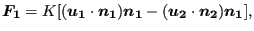

Keyword type: model definition
This option is used to assign material properties to beam elementsets. The parameters ELSET, MATERIAL and SECTION are required, the parametersORIENTATION, OFFSET1, OFFSET2 and NODAL THICKNESS are optional. The parameterELSET defines the shell element set to which the material specified bythe parameter MATERIAL applies. The parameter ORIENTATION allows toassign local axes to the element set. If activated, the materialproperties are applied to the local axis. This is only relevant fornon isotropic material behavior.
The parameter SECTION defines thecross section of the beam and takes the value RECT for arectangular cross section, CIRC for an elliptical cross section, PIPE for a pipe crosssection and BOX for a box cross section. Arectangular cross section is defined by its thickness in twoperpendicular directions, an elliptical cross section is defined bythe length of its principal axes. These directions are defined byspecifying direction 1 on the third line of the present keyword card. A pipe cross section is defined by its outer radius (first parameter) and its thickness(second parameter). A box cross section is defined by the parameters, ,
, ,
, ,
, and
and  (cf. Figure 84, is in the local1-direction,
(cf. Figure 84, is in the local1-direction,  is in the local 2-direction (perpendicular to the local 1-direction),
is in the local 2-direction (perpendicular to the local 1-direction),  is the thickness in the positive local 1-direction and so on).
is the thickness in the positive local 1-direction and so on).
Notice that, internally, PIPE and BOX cross sections are expanded into beams with arectangular cross section (this is also the way in which the beam is stored inthe .frd-file and is visualized in the postprocessor. The actual cross section is taken into account byappropriate placement of the integration points). This rectangular crosssection is the smallest section completely covering the PIPE or BOX section. For instance, for a pipe section the expanded section is square withside length equal to the outer diameter. For the expansion the localdirection 1 and 2 are used, therefore, special care should be taken to definedirection 1 on the second line underneath the *BEAM SECTIONcard. The default for direction 1 is (0,0,-1).
The OFFSET1 and OFFSET2 parametersindicate where the axis of the beam is in relation to the reference linedefined by the line representation given by the user. The index 1 and2 refer to the local axes of the beam which are perpendicular to thelocal tangent. To use the offset parameters direction the localdirections must be defined. This is done by defining local direction 1on the third line of the present keyword card. The unit ofthe offset is the thickness of the beam in the direction of theoffset. Thus, OFFSET1=0 means that in 1-directionthe reference line is the axis of the shell,OFFSET2=0.5 means that in 2-direction the reference line is the topsurface of the beam. The offset can take any real value and allows toconstruct beam of nearly arbitrary cross section and the definition ofcomposite beams.
The parameter NODAL THICKNESSindicates that the thickness for ALL nodes in the element set are definedwith an extra *NODAL THICKNESS card and thatany thicknesses defined on the *BEAM SECTION card areirrelevant.
First line:
Second line:
Third line:
Example: *BEAM SECTION,MATERIAL=EL,ELSET=Eall,OFFSET1=-0.5,SECTION=RECT 3.,1. 1.,0.,0.
assigns material EL to all elements in (element)set Eall. The reference line is in 1-direction on the back surface, in2-direction on the central surface. The thickness in 1-direction is 3unit lengths,in 2-direction 1 unit length. The 1-direction is the global x-axis.
Example files: beamcom, beammix, shellbeam, swing, simplebeampipe1,simplebeampipe2,simplebeampipe3,simplebeampipe4.